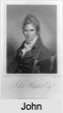

| [Index] |
| John HUNTER (1754 - 1809) |
|  |
| b. 1754 at Perthshire |
| m. 30 Jul 1784 Elizabeth LEGRAND (1756 - ) at Ash |
| d. 29 Jan 1809 at London aged 55 |
| Parents: |
| John HUNTER |
| Euphemia JACK |
| Siblings (1): |
| Peter HUNTER (1746 - 1805) |
| Children (3): |
| Euphemia Jane HUNTER (1786 - ) |
| Archibald Henry HUNTER (1791 - ) |
| Caroline Sophia HUNTER (1795 - 1822) |
| Events in John HUNTER (1754 - 1809)'s life | |||||
| Date | Age | Event | Place | Notes | Src |
| 1754 | John HUNTER was born | Perthshire | bap 27 Feb 1754 Lonforgan ? | ||
| 30 Jul 1784 | 30 | Married Elizabeth LEGRAND (aged 28) | Ash | Note 1 | |
| 03 Dec 1786 | 32 | Birth of daughter Euphemia Jane HUNTER | Westminster | Note 2 | |
| 29 Jan 1791 | 37 | Birth of son Archibald Henry HUNTER | Westminster | Note 3 | |
| 05 Jul 1795 | 41 | Birth of daughter Caroline Sophia HUNTER | Westminster | Note 4 | |
| 29 Jan 1809 | 55 | John HUNTER died | London | Note 5 | |
| Personal Notes: |
|
Hunter was born in Perthshire, and studied medicine at Edinburgh, where he graduated M.D. in 1775. He was admitted a licentiate of the College of Physicians of London in 1777, and appointed physician to the army through the interest of George Baker and William Heberden.[2]
From 1781 to 1783 Hunter was superintendent of the military hospitals in Jamaica. On returning to England he settled in practice as a physician in London, first in Charles Street, and then in Hill Street. Elected a fellow of the Royal Society by 1787, he was admitted a fellow of the College of Physicians speciali gratia in 1793, and was made censor the same year.[2] As Gulstonian lecturer in 1796, Hunter lectured on softening of the brain, which he is said to have been the first to treat as a distinct pathological condition; the lecture was not published. He delivered the Croonian lectures from 1799 to 1801. He was later physician extraordinary to the Prince of Wales.[2] Hunter died on 29 January 1809 at Hill Street, London.[2] Hunter's college dissertation De Hominum Varietatibus et harum causis (1775) was in the biological anthropology tradition. It was republished in an English translation by Thomas Bendyshe in 1865 as an appendix to Johann Friedrich Blumenbach's treatise in the same area, in the publications of the Anthropological Society.[2][3][4] In 1787 Hunter contributed to the third volume of the Medical Transactions published by the College of Physicians three papers: one on the occurrence of typhus fever in the houses of the poor in London; another on morbid anatomy, and a third on the cause of the "dry belly-ache" of the tropics. In the last of these the discovery made by Baker two years earlier, that lead poisoning in cider was the cause of "Devonshire colic", was extended by Hunter to rum which had been distilled through a leaden worm, observations of Benjamin Franklin's being adduced in proof.[2] In 1788 appeared Hunter's major work, Observations on the Diseases of the Army in Jamaica (2nd ed. 1796; 3rd ed. 1808, with "observations on the hepatitis of the East Indies"). It gives an amplified account of the "dry belly-ache", and deals with yellow fever and other diseases of the troops, as well as more briefly with some other Caribbean maladies. It was translated into German, Leipzig, 1792.[2] Hunter contributed to the Philosophical Transactions in 1788 a paper on Jamaican wells and springs, a subject suggested by Henry Cavendish. He contributed to the first volume of Transactions of a Society for the Improvement of Medical and Chirurgical Knowledge, 1793, a memoir on canine madness, drawn up at the society's request, and another on hydatids.[2] https://en.wikipedia.org/wiki/John_Hunter_(physician) HUNTER, JOHN, M.D. (d. 1809), physician, was born in Perthshire, and studied medicine at Edinburgh, where he graduated M.D. in 1775. His college thesis, 'De Hominum Varietatibus et harum causis,' shows him to have had a good education as well as a turn for research and correct reasoning. It was republished in an English translation by Bendyshe in 1865 as an appendix to Blumenbach's treatise on the same subject in the publications of the Anthropological Society. Hunter's essay had appeared just a month or two before Blumenbach's. 'Some parts of it,' says Bendyshe, 'are quite on a level with the science of the present day.' He was admitted a licentiate of the College of Physicians of London in 1777, and appointed physician to the army through the interest of Dr. Baker and Dr. Heberden. From 1781 to 1783 he was superintendent of the military hospitals in Jamaica. On returning to England he settled in practice as a physician in London. In 1787 he contributed to the third volume of the `Medical Transactions published by the College of Physicians' (a work mainly supported by Heberden and Baker) three papers: one on the common occurrence of typhus fever in the crowded and unventilated houses of the poor in London, another on two interesting observations in morbid anatomy, and a third on the cause of the 'dry belly-ache' of the tropics. In the last of these the discovery made by Baker two years earlier, that lead in the cider was the cause of Devonshire colic, was extended by Hunter to rum which had been distilled through a leaden worm, an observation of Benjamin Franklin's being adduced in proof. In 1788 appeared his principal work, 'Observations on the Diseases of the Army in Jamaica' (2nd ed. 1796; 3rd ed. 1808, with 'observations on the hepatitis of the East Indies'), which gives an amplified account of the 'dry belly-ache,' and deals with yellow fever and other diseases of the troops, as well as briefly with some of the more curious negro maladies; it was translated into German, Leipsic, 1792. Previous to 1787 he had been elected a fellow of the Royal Society, and contributed to the 'Philosophical Transactions,' 1788, vol. lxxviii., a paper on 'Some Observations on the Heat of Wells and Springs in the Island of Jamaica, and on the Temperature of the Earth below the Surface in different Climates,' the subject having been suggested by Cavendish to him when he was about to embark for Jamaica in 1780. He contributed to the first volume of 'Transactions of a Society for the Improvement of Medical and Chirurgical Knowledge,' 1793, a valuable memoir on canine madness, drawn up at the society's request, and another on hydatids. In London he practised first in Charles Street, St. James's Square, and afterwards in Hill Street, Berkeley Square. He was admitted a fellow of the College of Physicians speciali gratia in 1793, and was made censor the same year. As Gulstonian lecturer in 1796 he lectured on 'softening of the brain,' which he is said to have been the first to treat as a distinct pathological condition. The lecture was not published. He delivered the Croonian lectures from 1799 to 1801 (subjects not stated). He was afterwards physician extraordinary to the Prince of Wales. He died on 29 Jan. 1809 at Hill Street, Berkeley Square, London. Hunter's writings; Munk's Coll. of Phys. ii. 425; Gent. Mag. 1809, pt. i. p. 188.] https://en.wikisource.org/wiki/Hunter,_John_(d.1809)_(DNB00) His will on Ancestry PROB 11/1492 made 18 Jan 1809, proved 10 Feb 1809 refers to property in Perthshire, his daughter Euphemia Jane to be guardian of her younger sister Caroline; to his sons John and Peter, his late brother Lieutenant (Govenor) Peter Hunter. Euphemia Jane Hunter born 3 Dec 1786 bap 11 Jan 1787 Westminster ex FS. Caroline Sophia Hunter b 5 Jul 1795 bap 11 Jul 1795 St James Westminster ex FS buried 4 Jun 1822 St James Westminster ex Ancestry PR. Peter (Captain) 1788 - 1876 b 2 Feb 1788 bap 6 Feb 1788 Westminster ex FS see 1861 and 1871 census. There is at lesat one other son Archibald Henry 1791 born 29 Jan 1791 bap 18 Apr 1791 Westminster ex FS but son John is stil to find. For more see http://person.ancestry.co.uk/tree/70943352/person/34225106670/facts |
| Created on a Mac™ using iFamily for Mac™ on 8 Oct 2023 |